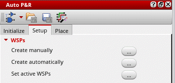
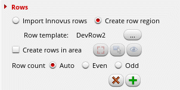

Setting Up a Design in the Auto P&R Standard Cell Flow
In the Auto P&R standard cell flow, after generating the PR boundary, instances, nets, and pins in the layout, the next step is to prepare the design for placement and routing.
Use the Setup tab of the Auto P&R assistant to configure the WSP settings, routing preferences, pin attributes, row generation options, and routing checks before running the standard cell placer.
To specify placement and routing settings for standard cells:
-
Open the Setup tab of the Auto P&R assistant.
 - Set up WSPs by selecting Browse beside one of the following options:
-
In the Rows section, specify how rows are to be created—imported from Innovus or created in Virtuoso.
-
When set to Import Innovus rows, the tool imports the entire row region that either fits within the PR boundary or the region you draw with Create rows in area.
Set First row orientation to the orientation of the bottom-most (first) row in the row region. -
When Rows is set to Create row region, click the Browse button next to Row template and select a row template based on which rows are to be generated.
-
When set to Import Innovus rows, the tool imports the entire row region that either fits within the PR boundary or the region you draw with Create rows in area.
- Select Create rows in area to enable the row region selection options.
- Select Display log to specify whether the setup log must be displayed in the CIW.
- Select Overwrite log to overwrite the existing setup log. When this option is not selected, a new log file is created.
-
Click
 to delete any existing created rows.
to delete any existing created rows. - Click to create a new row region.
-
Click Browse beside Generate supply grid to open the Supply tab of the Routing assistant, which lets you create a uniform width and pitch pattern-based WSP.
If the boundary cells have blockages on the power rails, select the Add cell row routing option on the Route tab of the Routing assistant. Do not create stripes on the standard cell power rails (cell row) layer with the supply router. Instead Innovus creates the stripes after the boundary cells are placed, and it respects the blockages in them. - Click Browse next to Specify pin positions and attributes to open the Pin Planner tab of the Pin Placement form, where you can specify pin constraints and pin attributes.
- Click Browse beside Run checks to display the Check tab of the Routing assistant, where you can select the required pre-routing checks to be run during design placement.
 to toggle visibility of the area bbox in the design canvas.
to toggle visibility of the area bbox in the design canvas.Your design is now ready for placement.
Related Topics
Auto P&R Assistant User Interface for Standard Cell
Routing assistant - Setup tab
Routing assistant - Supply tab
Routing assistant - Check tab
Return to top